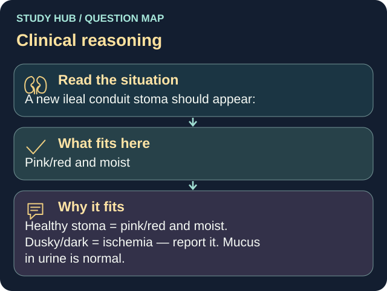

A new ileal conduit stoma should appear:
Answer
Pink/red and moist
Reasoning
Healthy stoma = pink/red and moist.
Clinical detail
Dusky/dark = ischemia — report it. Mucus in urine is normal.
Why the other answers do not fit
- Pale and dry
- Dusky blue
- Black
Shared reasoning for choices without a separate note: Healthy stoma = pink/red and moist. Dusky/dark = ischemia — report it. Mucus in urine is normal.
